SAJE – Art & Paysage
Corriger un texte, changer une photo, ajouter un projet : tout se fait depuis votre navigateur, sur ordinateur comme sur téléphone. Aucun code, aucun logiciel.
Après chaque « Enregistrer », la modification est en ligne au bout de 1 à 2 minutes. Rien n’est jamais perdu : toutes les versions précédentes sont conservées (voir « Revenir en arrière »).
À faire une seule fois par appareil : le navigateur s’en souvient ensuite.
Ouvrez sajepaysage.fr/admin/ dans votre navigateur.
Collez votre clé d’accès (un long code commençant par github_pat_, remis avec ce guide) dans le champ, puis cliquez sur Se connecter.
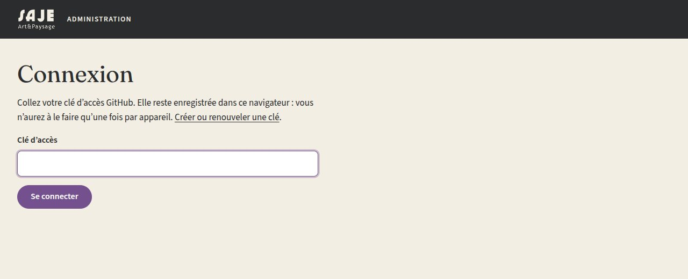
C’est la page d’accueil de l’administration. Elle liste tous les contenus du site avec, pour chacun, un bouton Modifier sur la page (et EN pour la version anglaise). Les étiquettes indiquent si un projet est Publié ou Masqué, et si l’anglais est complet.
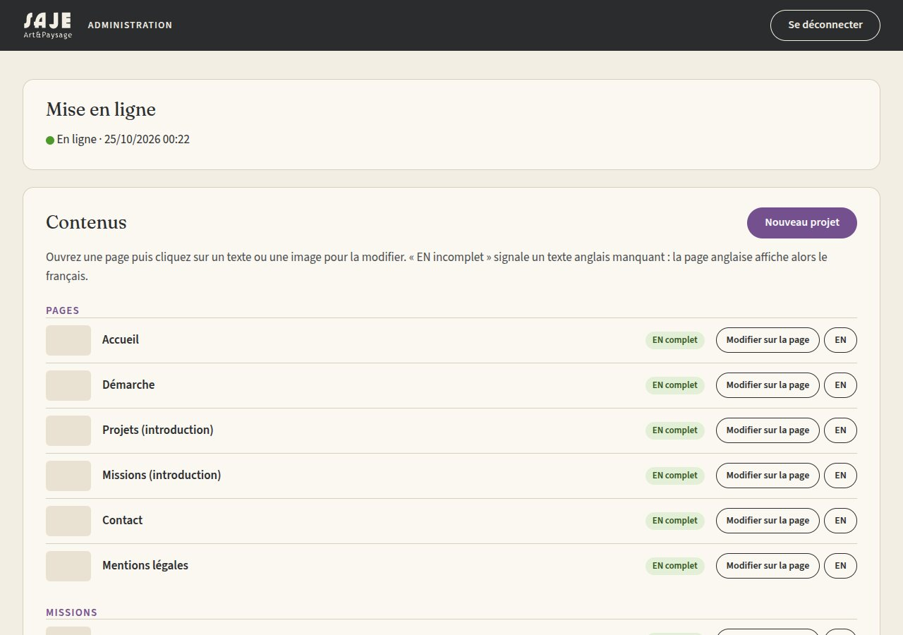
Le principe : on modifie le texte directement sur la page, comme dans un traitement de texte.
Dans le tableau de bord, cliquez sur Modifier sur la page à côté de la page voulue.
Vous pouvez aussi parcourir le site normalement : tant que vous êtes connectée, un bouton Modifier cette page apparaît en bas à droite de chaque page.
Une barre noire s’affiche en haut de la page. Passez la souris sur un texte : il s’entoure d’un pointillé violet. Cliquez dedans et écrivez.
Quand vous avez fini, cliquez sur Enregistrer dans la barre noire. Le bouton indique combien de modifications attendent d’être envoyées, par exemple « Enregistrer (3) ».
Le message « Enregistré. En ligne dans environ 2 minutes » confirme l’envoi. Rechargez la page un peu plus tard pour voir le résultat.
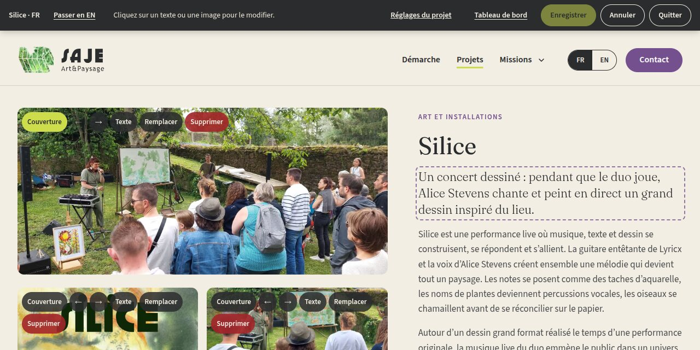
Quand vous cliquez dans un descriptif (le grand texte d’un projet, d’une mission, de la Démarche…), une petite barre apparaît au-dessus : G (gras), I (italique), Lien et Sans lien. Sélectionnez d’abord les mots concernés, puis cliquez sur le bouton.
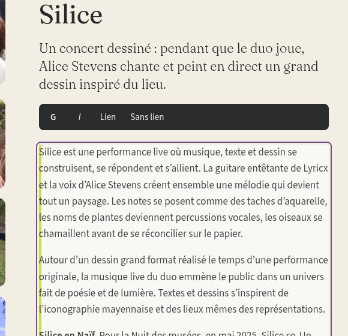
Sous chaque projet, la fiche affiche le lieu, la date, le commanditaire, les partenaires et votre intervention. Un champ resté vide n’apparaît pas sur le site ; en mode édition, il s’affiche avec « À compléter ». Cliquez dessus pour le remplir.
Dans la barre noire, Passer en EN ouvre la même page en anglais, avec les mêmes outils. Les textes entourés d’un pointillé orange ne sont pas encore traduits : le site affiche alors le français à leur place. Cliquez dessus et écrivez la traduction.
En mode édition, chaque image d’un projet porte une rangée de boutons.
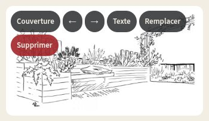
| Bouton | Ce qu’il fait |
|---|---|
| Couverture | Choisit l’image qui représente le projet : vignette dans la liste des projets, à l’accueil, et aperçu quand le lien est partagé. |
| ← → | Déplace l’image avant ou après sa voisine. La première image est la grande image en haut de la page. |
| Texte | Modifie la description de l’image (texte alternatif) et sa légende, en français et en anglais. |
| Remplacer | Remplace la photo par une autre, en gardant sa place. |
| Supprimer | Retire l’image du projet (après confirmation). Elle reste récupérable dans l’historique. |
Tout en bas de la page du projet, cliquez sur « + Ajouter des images ».
Choisissez une ou plusieurs photos à la fois. Sur téléphone, vous pouvez prendre une photo ou piocher dans la photothèque.
Pour chaque photo, une fenêtre demande sa description (voir ci-dessous). Remplissez-la, puis Valider.
Cliquez sur Enregistrer : les photos sont envoyées avec le reste.
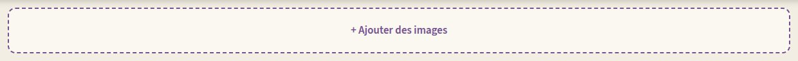
Le texte alternatif en français décrit l’image pour les personnes qui ne peuvent pas la voir (lecteur d’écran) ; il s’affiche aussi quand l’image ne se charge pas, et aide le référencement. Il est obligatoire : le bouton Enregistrer refuse tant qu’une image n’en a pas.
Une phrase suffit, qui dit ce que l’on voit : « Allée de sable bordée de graminées, menant à des panneaux blancs », plutôt que « IMG_2043 » ou « photo du jardin ». La version anglaise et la légende (affichée sous l’image agrandie) sont facultatives.
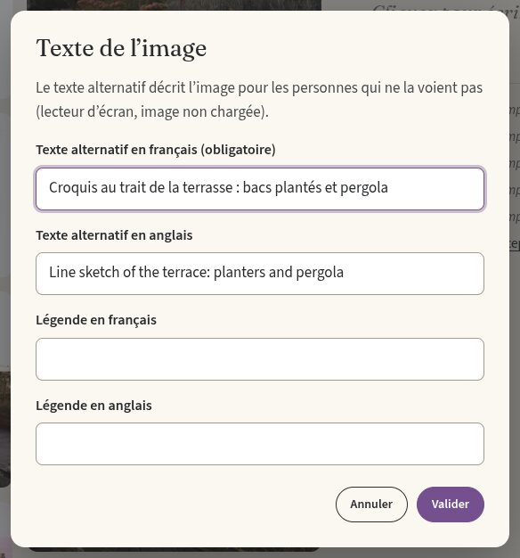
Sur les autres pages (accueil, Démarche, missions), les images n’ont que deux boutons : Texte et Remplacer.
Un nouveau projet est d’abord créé masqué : personne ne le voit tant que vous ne l’avez pas publié. Vous pouvez donc le préparer tranquillement.
Dans le tableau de bord, cliquez sur Nouveau projet.
Saisissez le titre en français et cochez les catégories (ce sont les filtres de la page Projets : un projet peut en avoir plusieurs). Puis Créer le projet.
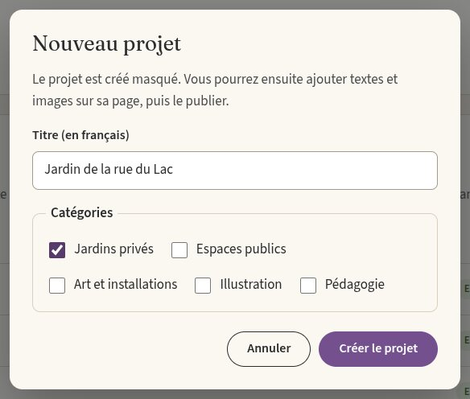
Patientez environ 2 minutes. Le message « C’est en ligne. Ouverture de la page… » s’affiche, puis la page du projet s’ouvre toute seule en mode édition. (Si vous fermez l’onglet, retrouvez le projet dans la liste du tableau de bord.)
Remplissez la page, comme au point 2 : accroche (la phrase d’introduction), descriptif, fiche (lieu, date…). Puis ajoutez les photos, comme au point 3. La première photo ajoutée devient la couverture ; vous pouvez en choisir une autre avec le bouton Couverture.
Cliquez sur Réglages du projet (barre noire en haut), cochez « Publié (visible sur le site) » puis Appliquer.
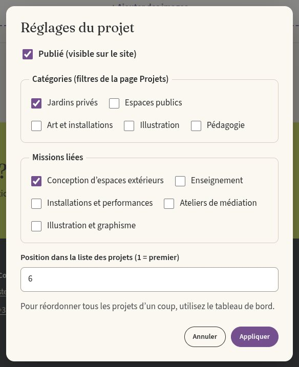
Cliquez enfin sur Enregistrer. Environ 2 minutes plus tard, le projet apparaît dans la liste des projets du site.
Ces réglages se font dans le tableau de bord, plus bas que la liste des contenus.
Dans « Ordre des projets », déplacez chaque projet avec les flèches ↑ ↓ (ou en le faisant glisser, sur ordinateur), puis cliquez sur Enregistrer l’ordre. Les projets masqués restent dans la liste, marqués « Masqué ».
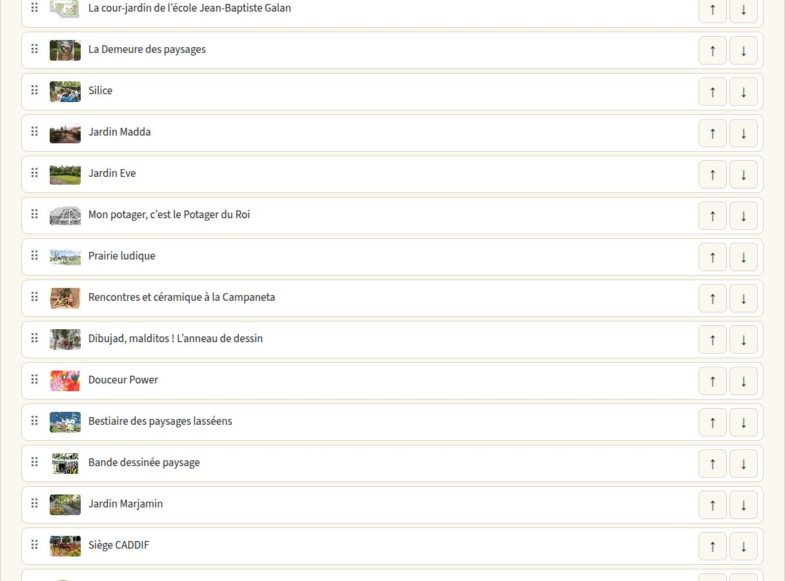
Dans « Page d’accueil » :
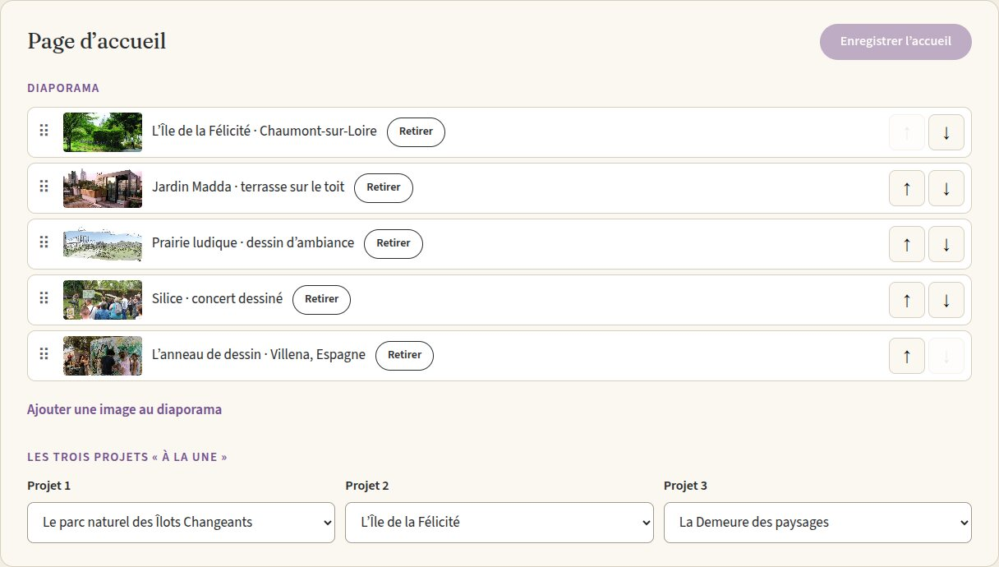
En bas du tableau de bord, l’historique liste les 20 dernières modifications. Ouvrez-en une : les fichiers concernés s’affichent, avec un bouton Revenir à cette version qui rétablit le fichier tel qu’il était juste après cette modification. C’est aussi le moyen de récupérer une image ou un projet supprimé par erreur.
| Ce que vous voyez | Que faire |
|---|---|
| « La clé d’accès n’est plus valide » | La clé a expiré ou a été refusée. Demandez-en une nouvelle (voir l’annexe), puis reconnectez-vous sur sajepaysage.fr/admin/. |
| « …a été modifié ailleurs depuis l’ouverture de cette page » | La même page a été modifiée par quelqu’un d’autre, ou dans un autre onglet. Pour ne rien écraser, rien n’a été enregistré : copiez votre texte, rechargez la page, puis recommencez. |
| « Le texte alternatif est obligatoire » | Une image n’a pas de description. Cliquez sur son bouton Texte et remplissez le champ français. |
| Ma modification n’apparaît pas | Attendez 2 minutes, puis rechargez la page (sur téléphone : fermez et rouvrez l’onglet). Vérifiez dans le tableau de bord que la pastille est verte. |
| Pastille rouge « Erreur lors de la mise en ligne » | Vos modifications sont enregistrées, mais le site n’a pas pu être reconstruit. Prévenez la personne qui gère le site. |
Pour la personne qui gère le site. La clé est valable un an ; le tableau de bord prévient Alice 30 jours avant son expiration.
Depuis le compte GitHub qui possède le dépôt du site, ouvrez github.com/settings/personal-access-tokens et cliquez sur Generate new token.
Renseignez :
Cliquez sur Generate token, copiez le code github_pat_… (GitHub ne le montrera plus) et transmettez-le à Alice par un moyen privé.
Guide d’administration du site sajepaysage.fr · Les captures montrent le site avec des données d’exemple.